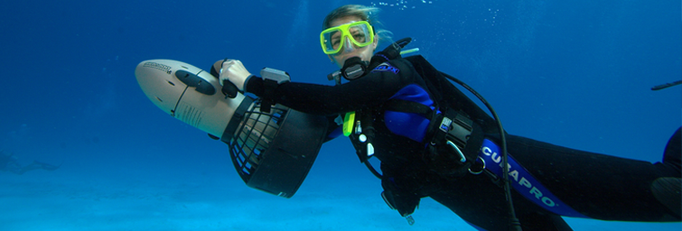

Back To Services >>
Cost:
$115 per person
Time: About six hours
What to Bring:
Dive Location:
Reservations Highly Recommended.
Back to Top ^Boat Dives
Boat Dives are available on the "Catalina Grace." The [???] is 36 feet long and carries 12 divers. We believe in personal service and getting you to the best diving available around Catalina Island. We typically leave at 9:00 am with 4-12 divers for two tank dives and returning at approximately 3:00 pm. We offer a choice of steel or aluminum tanks and soft weight or the boat. All trips include tanks, weights, lunch, and drinks.
Cost:
$115 per person
Time: About six hours
What to Bring:
Dive Location:
Reservations Highly Recommended.